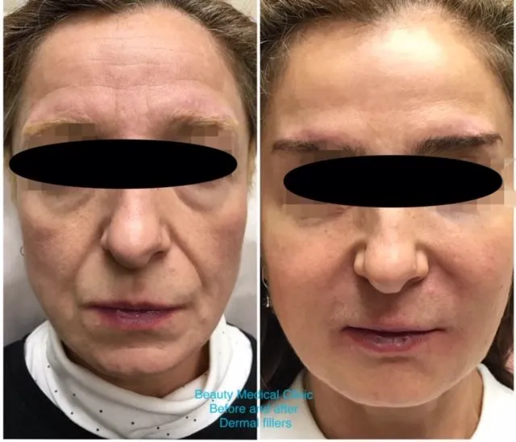
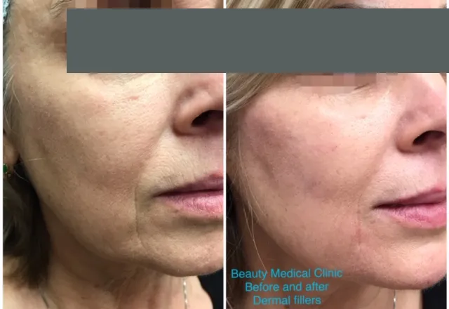

Where fillers work
HA fillers are among the safest and most effective injectables for lines, creases and lost volume. They are excellent for face sculpting in these areas:
- Cheeks
- Midface
- Nasolabial folds (beside the nose)
- Chin
- Lips
- Jawline
For wrinkles, filler adds natural volume beneath the line to lift and smooth it. For contours, it corrects deep folds and lifts the cheeks and chin. In the lips, it is placed inside the lip for fullness and along the border for definition, which also helps stop lipstick bleeding into fine lines. See lip fillers.
Why hyaluronic acid?
HA occurs naturally in the body, and almost half of it is in the skin, where it binds up to 1,000 times its weight in water to keep skin plump and hydrated. As we age we make less of it; skin thins, stretches and loses elasticity, and everyday expressions etch lines deeper.
HA fillers hold their shape using the body’s own moisture, last longer than older fat or collagen injections, and are not made from animals, so there is no risk of animal-borne disease or reactions in people sensitive to foods like beef, chicken or eggs. Skin boosters use the same ingredient to hydrate rather than volumize.
What happens during treatment
- Numbing cream can be applied to reduce discomfort.
- The skin is cleansed with an antiseptic.
- The clear gel is placed with a fine needle, at a depth that matches the line or area being treated. Several small injections may be used.
- Victoria gently massages the area so it blends with the surrounding contours.
- Ice may be applied for a few minutes to limit swelling.
Because it is quick, many clients come in on a lunch hour and go back to work.
After your appointment
- Results are visible straight away.
- Redness and swelling are normal for up to a few hours.
- Tenderness can last a few hours or a few days.
- The area may feel firm for one to two weeks before it softens and settles.
Bruising is the most common side effect. Studies put it anywhere from about one in five patients to two in three, and it is most likely in the tear troughs, upper lip and marionette lines. The preparation below lowers your chances.
How to prepare: two weeks before
- Stop anti-inflammatory painkillers such as naproxen, aspirin and ibuprofen (Advil, Motrin), unless your doctor has prescribed them.
- Avoid natural blood thinners: vitamin E, ginger, garlic, green tea, fish oil and omega-3.
- Avoid alcohol.
- Arnica, a homeopathic remedy, taken for four days before and four days after may help prevent bruising: four pellets under the tongue, three times a day.
Results




Beauty Medical Clinic clients. Individual results vary.
When you visit Victoria’s clinic for a consultation, you’ll certainly be impressed by her passion, professionalism and honesty.
The best anti-ageing clinic around, hands down. Victoria is professional and educated on all the treatments.
Dermal fillers FAQ
How long does filler treatment take?
Anywhere from a few minutes to about an hour, depending on how many areas are treated.
When will I see results?
Immediately. Some swelling and firmness can soften the final shape for a week or two while the filler settles.
Will I bruise?
You might. Bruising is the most common side effect, especially under the eyes and around the mouth. Following the two-week preparation steps above reduces the risk.
Which brands do you use?
Hyaluronic acid fillers such as Juvéderm, Restylane and Emervel. Victoria chooses the product to suit the area and the look you want.
This page is general information, not medical advice. Your suitability for any treatment is confirmed at a consultation with Victoria Adamov, RN.